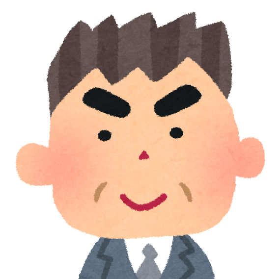

1、成立の目的＆目標
本学の構成員としての学生の自治組織。学生生活を守り、豊かにするための種々の活動を行うものとして、大衆化に伴い多くの専門学校と大学で組織されるようになった。おもに学習上の環境条件や厚生福祉の改善に努めるとともに、文化、教養、体育などの多方面のクラブ・サークル活動を実施する。

崔会長
人々と繋がって交流すると自分の世界観、価値観に新しい認識をもらえる。
人生の大切な経験を積んで、自己PRになれるようにがんばりましょう。
水野副会長
３、成員募集
現在組織は20人メンバーがいる。人数の上限はない。各部でも募集中。
© 日本電子専門学校 21AW0107